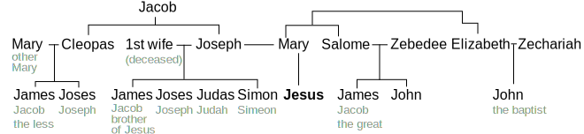

This post contains some unorganized notes on who John was. He was likely the youngest of the 12 disciples, and likely one of the disciples who was directly related to Jesus (Mary was John’s biological aunt).
Jesus’ Family Tree
The following diagram illustrates my best guess at the family tree of Jesus. It makes the assumption that James was an older step-brother of Jesus from a wife Joseph had before Mary. There are two other hypotheses: the first assumes that James is a half-brother of Jesus through Mary (which I think is unlikely because Jesus on the cross entrusts Mary to John and not to James, more on this below), and the other assumes that James is the cousin of Jesus through Joseph’s brother Cleopas (which seems possible given the similarities in the names of Cleopas’ children in John 19:25; Matthew 27:56; Mark 15:40 and the listing of Jesus’ “brethren” in Matthew 13:55; Mark 6:3, though the use of “brother” to mean “cousin” is rare). I believe Ellen White favors the interpretation that these were older step-brothers (DA 86.2, 87.2)

A few more notes justifying this set up, moving left to right
- Other Mary: Three women are listed at the cross (John 19:25, Mark 15:40, ): Jesus’ mom. All three women went to the tomb to embalm Jesus (Matthew 28:1-10, Mark 16:1-8, Luke 24:1-2, John 20:1-8). She is listed as the mother of James and Joses
- Cleopas: also Clopas. This is the man that Jesus appeared to on the road to Emmaus. According to the Jewish Encyclopedia, the nearest relatives were supposed to bury the body of a deceased relative. Assuming that Joseph was dead during Jesus’ ministry, Cleopas would have been the oldest male relative.
As soon as the last breath was drawn, the eyes of the dead were closed by the oldest or most distinguished son or next relative (Gen. xlvi. 4), the mouth was shut, and kept in position by a band on the cheek-bonesw, and the body placed upon sand or salt on the floor to retard decompsition, metal or glass being put upon the navel to prevent swelling. Then the body waswashed and anointed with aromatic unguents, and wrapped in linen cloths (Shab. xxiii. 5; Sem. i. 2, 3; Acts ix. 37; John xi. 44, xii. 7, xix. 39 et seq., xx. 6 et seq.; Matt. xxvii. 59; Mark xv. 46 et seq.; Luke xxiii3 53 et seq; Testament of Abraham, xx.).
Throwing Earth Upon a Coffin, Picart, 1723 - Joseph’s first wife: It’s likely that Mary was Joseph’s second wife, after his first wife had passed away. The reason for beliving this is that. Ellen White in Desire of Ages wrote that they were his older brothers (DA 87.2), and Jesus was Mary’s firstborn son (Matthew 1:25). Therefore, these brothers were either through Joseph’s earlier marriage, or perhaps they were children of Cleopas. Eusebius of Caesarea quotes Hegesippus, who wrote c. AD 180 that he interviewed the grandsons of Jude the Apostle and learned Clopas was the brother of Jesus, husband of Mary:
After the martyrdom of James, it was unanimously decided that Simeon, son of Clopas, was worthy to occupy the see of Jerusalem. He was, it is said, a cousin of the Saviour. Eusebius of Caesarea, Church History, Book III, ch. 11.
- Salome: Using similar logic to the Other Mary, Salome can be identified as Jesus’ mother’s sister, and the mother of the children of Zebedee. When Jesus was dying on the cross, he entrusted the care of his mother to John the disciple (John 19:25-27). If Mary were the mother of Jesus’ brother James, then Jesus would not have had to commit her care to John, since James would care for Mary. However, if James were a stepson of Mary, perhaps it made more sense for Jesus to entrust Mary to her nephew’s care instead of a stepson.
- There are many who believe that Alphaeus is equivalent to Cleopas, in which case James the less would have been one of Jesus’ disciples. Others further suggest that Matthew is the same as Levi the son of Alphaus. If both of these are true (though there are several reasons to doubt this association), then as many as four of Jesus disciples would have been his cousins: Matthew, James the son of Alphaeus, James the son of Zebedee, John. Andrew and Peter would have been close friends with James and John. Therefore, a full half of Jesus’ disciples would have grown up knowing Jesus as a teenager.
Assuming Jesus was the older step-brother of Jesus, we can speculate on the type of relationship that they had growing up. In Mark 3:21, as Jesus began his ministry, his family (some translations say “friends”) heard what was happening, and tried to take him away saying, “He is out of his mind.” His brothers and his mother show up in Mark 3:31 and Matthew 12:46 trying to take him away. His brothers did not believe in Jesus during his 3.5-year ministry (John 7:3-5). Chapter 9 of the Desire of Ages gives a few more glimpses into Jesus young life and the tension he experienced with his brothers.
Birthdate of John the Evangelist
The date of birth of Jesus is not stated in the gospels or in any historical sources, and the evidence is too incomplete to allow for consistent dating. The traditional Adventist chronology sets Jesus’ ministry as starting in the fall of AD 27, and his crucifixion in the spring of AD 31. Luke 3:23 says that Jesus was about 30 years of age at the start of his ministry, which places his birth in the fall of 4 BC (Numbers 4 and 1 Chronicles 24 state that the age of 30 is the start of priestly or other ministerial service in the tabernacle).
John the Baptist was 6 months older than Jesus (Luke 1:36).
Wikipedia states with absolutely no sources that John the Evangelist was born in 6 AD. I’ve scoured the internet to find some sort of citation for this, and wasn’t able to find anything. I asked ChatGPT to come up with an explanation. It stated that the early second-century bishop Irenaeus in Against Heresies speaks of John living to an old age and being present during the reign of Emperor Trajan (who ruled from 98-117 AD), which gives us some diea of his lifespan (Eusebius of Caesarea, in Ecclesiastical History says something similar). At the earliest, John would have died at AD 100. In order to live this long, Jesus likely could not have been born too early compared to Jesus.
Ellen White states that John was the youngest disciple (Desire of Ages, Chapter 20, “A Night on the Lake”)
The traditional age assigned to John at the beginning of Jesus’ ministry is 16-18. Working back from the fall of AD 27, this puts John’s birth date in AD 9-11.
Jesus and John as Kids
From the family tree listed above, we can see that John the evangelist was Jesus’ first cousin. I believe that Jesus was much closer to his cousin John than he would have been to his half brothers through his father. There are several reasons to believe this
- During his ministry, Jesus’ brothers claimed that Jesus was “out of his mind” (Mark 3:21)
- When Jesus was dying on the cross, He entrusted the care of his mother Mary to John the evangelist. The responsibility of taking care of a widows was very important in Jewish law (Exodus 22:22, Deuteronomy 24:17-21). The Talmud (Mishna, Ketubot) discusses the duty of relatives to provide for widows, reinforcing that widows were to be cared for by close male relatives.
Now, if Jesus began his ministry at age 30, and John became a disciple at age 18, this would have made John 12 years younger than Jesus. And while Jesus may not have found companionship among his older half brothers, it is possible that Jesus’ fondness for John as “the disciple that Jesus loved” started as early as John’s birth.
On the Way to the Temple
Luke 2:41-52 tells the story of Jesus going to the passover whe he was 12 years old. This would have occured in AD 9.
Verse 41 indicates that Jesus’ parents went to Jerusalem every year at the feast of the passover. The hourney from Nazareth to Jersualem is 64 miles as the crow flies, and about 91 miles by modern road system, so it would have been a 4-5 day journey. Such a journey would have been a big affair, and it was not uncommon for the journey to be taken with relatives. Jesus grew up in Nazareth, and the sons of Zebedee (James and John) lived northeast of Nazareth in Capernaum, about 40 miles away. It’s likely that Jesus and his cousins would have journeyed together to th epassover.
Verse 43 says that Jesus stayed behind in Jerusalem. Verse 44 says that his parents went about a day’s journey away, and then started looking for Jesus among their “kinsfolk and acquaintance” (Luke 2:44 KJV). This demonstrates that Jesus’ parents had reason to believe that Jesus was walking the entire day either with friends or family.
The following is speculation, but I think it harmonizes with the facts that we are given in scripture.
On the 5-day journey to Jerusalem, Jesus would have rendezvouzed with his aunt Salome and uncle Zebedee. Jesus was already familiar with his younger cousin James. But would have met for the first time his new baby cousin John, who may have been a toddler at this point. Ever gentle, kind, and loving Jesus would have assisted Salome in childcare.
- Carrying John: When John grew tired from walking, Jesus may have carried him on his hip or helped guide him along the path.
- Entertainment: To keep young John engaged during the journey, Jesus could tell him stories or play simple games, helping him to bond with his younger cousin.
- Safety: Jesus would likely be mindful of keeping an eye on John, ensuring he didn’t wander off or trip on the uneven terrain.
- Bonding moments: The journey would have provided plenty of opportunities for bonding moments. As they traveled together, Jesus might teach John about the beauty of nature, point out animals, or share lessons from Scripture, setting a foundation for John’s spiritual upbringing.
At the Wedding at Cana
John 2:1-12 also describes the first wedding that Jesus performed at the Wedding of Cana. John’s gospel is the only gospel where this miracle had been recorded. It’s possible that Jesus had not yet called all 12 of his disciples at this point, and perhaps John (being one of the first disciples to be called). The disciples that would have been at Cana may have been only the five disciples described in John 1:35-51
- Andrew
- Simon Peter (Andrew’s brother)
- Philip
- Nathanael (also known as Bartholomew)
- John (traditionally believed to be the unnamed disciple with Andrew)
Ellen White states in Desire of Ages (p. 144-146)
From the Jordan, Jesus had returned to Galilee. There was to be a marriage at Cana, a little town not far from Nazareth; the parties were relatives of Joseph and Mary; and Jesus, knowing of this family gathering, went to Cana, and with His disciples was invited to the feast.
As a relative of the parties, Mary had assisted in the arrangements for the feast, and she now spoke to Jesus, saying, “They have no wine.”
This would have also made John a relative at the party.
The fact that certain stone jars were present that were used in purification rites, suggests that the house of this wedding was a priestly house (or at least had some concern for Jewish ritual purity). Given that Mary’s cousin Elizabeth was married to a priest, this suggests that Jesus’ family on his mothers’ side were priestly descent. There is also evidence in the gospels that John was fairly well educated and able to read and write. This would also be evidence of John being in a priestly family.

{kind=link}
Cana was between Capernaum and Nazareth, and further suggests the geographical spread of the family.
This gives insight into other types of family affairs that Jesus and his cousins would have had growing up.